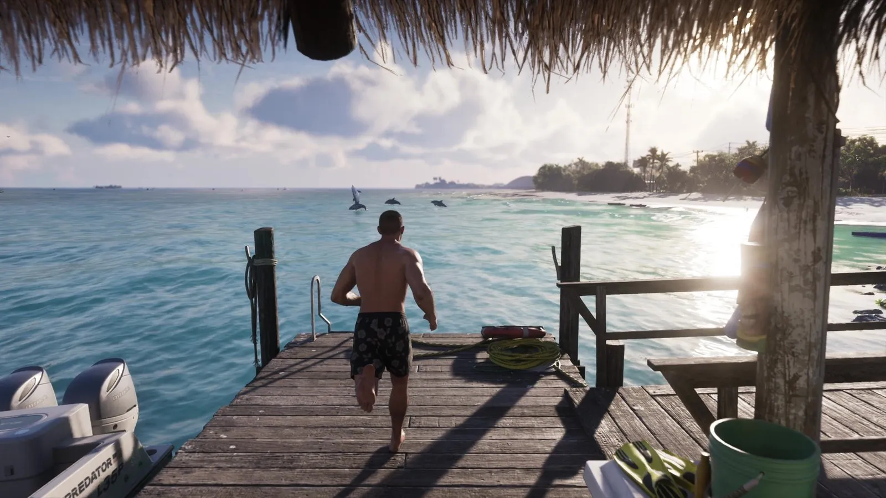
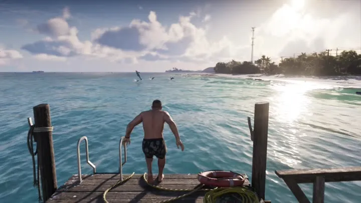

// Справочник · Занятия
Прыжок с пирса в GTA 6
Обновлено:

Разбег по деревянному пирсу — и прыжок в бирюзовый океан: одна из «летних» сцен «Расширенного показа».
Что видно в кадре
- Деревянный пирс.
- Бирюзовая вода и острова.
Подробно
На 17:22 «Расширенного показа» парень разбегается по деревянному пирсу и прыгает в океан. Рядом — лодка, вдалеке — острова. Сразу после в нарезке мелькают гидроциклы.
Кадры

Где посмотреть
Таймкоды — чтобы найти момент в официальном видео Rockstar.
| Где | Что в кадре |
|---|---|
| «Расширенный показ», 17:22 | Разбег по пирсу |
| «Расширенный показ», 17:23 | Прыжок в океан |
Кадры и названия: Rockstar Games — трейлеры GTA VI, «Расширенный показ» (An Extended Look), официальные скриншоты. После релиза 19 ноября 2026 года дополним страницу данными из игры.
Короткие ролики: GTA 6 и реальная жизнь
Каждый день — одно сравнение: кадр игры рядом с реальным фото. Подписывайтесь:
YouTubeInstagramTikTok